금형기능사 (2002-07-21 기출문제)
1과목: 임의구분
1. 프레스의 종류 중 기계식 프레스에 해당하지 않는 것은?
- 크랭크 프레스
- 너클 프레스
- 공압 프레스
- 마찰 프레스
(정답률: 52%)

2. 금형의 설치에서 금형의 점검 사항이 아닌 것은?
- 녹아웃 장치의 고정 상태
- 안내판과 부시의 조립 상태
- 자동 스톱핀의 작동 상태
- 램과 슬라이드의 간격(틈) 상태
(정답률: 65%)
3. 드로잉 가공 그룹에 속하지 않는 것은?
- 아이어닝 가공
- 재 드로잉 가공
- 역 드로잉 가공
- 사이징 가공
(정답률: 64%)
4. 굽힘 가공의 분류가 아닌 것은?
- 헤 딩(heading)
- 성 형(forming)
- 버 링(burring)
- 컬 링(curling)
(정답률: 47%)
5. 다음 보기를 보고 프레스 기계에 금형을 설치하는 순서가 맞는 것을 고르시오?
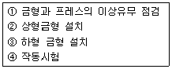
- ①-③-②-④
- ①-②-③-④
- ③-②-①-④
- ②-③-④-①
(정답률: 68%)
6. 두께가 4mm, 폭이 100mm 인 강판을 전단 하고자 할 때 하중은 몇 kgf인가? (단, 강판의 전단응력은 30kgf/㎜2이다.)
- 0.075
- 400
- 3000
- 12000
(정답률: 49%)
7. 전단금형을 설계할 때 제품에 대해 검토할 사항이 아닌것은?
- 재질
- 판두께
- 윤활방식
- 제품형상의 복잡성
(정답률: 50%)
8. 다음 중 프레스 가공의 특징이라고 할 수 없는 것은?
- 가공속도가 느리고 능률이 높다.
- 제품의 강도가 높고 경량이다.
- 재료의 이용률이 좋다.
- 제품의 정도가 높고 품질이 균일하다.
(정답률: 64%)
9. 금형의 안내장치에 속하지 않는 것은?
- 안내판
- 가이드 부시
- 사이드 커터
- 가이드 포스트
(정답률: 68%)
10. 사출금형에서 성형품을 금형 밖으로 빼내는 역할을 하는 부품은?
- 스프루 로크 핀
- 이젝터 핀
- 가이드 핀
- 스톱 핀
(정답률: 73%)
11. 사출 성형품에 절단 자국을 적게 남기기 위한 게이트의 종류는?
- 사이드 게이트
- 서브머린 게이트
- 태브 게이트
- 필름 게이트
(정답률: 51%)
12. 사출 성형품의 휨 또는 뒤틀림의 불량 원인의 개선 대책으로 옳지 않은 것은?
- 냉각이 균일하게 되도록 한다.
- 수지온도를 높게 하여 유동성을 좋게 한다.
- 빼기구배를 크게 한다.
- 냉각되기전에 빨리 취출한다.
(정답률: 75%)
13. 성형수축률을 옳게 나타낸 것은?(단, A:상온에서 금형치수, B:상온에서 성형품치수)
- 성형수축률 = (A+B) ÷ A × 100
- 성형수축률 = (A-B) ÷ A × 100
- 성형수축률 = (A-B) ÷ B × 100
- 성형수축률 = (A+B) ÷ B × 100
(정답률: 61%)
14. 성형기의 노즐과 금형의 스프루 부시의 위치결정 역할을 하는 것은?
- 인서트 플레이트
- 로케이트 링
- 가이드 핀, 부시
- 타이바
(정답률: 45%)
15. 금형 탈착시 무거운 금형은 무엇을 사용하여야 하는가?
- 호이스트(hoist)
- 여러 사람의 인력
- 금형을 부품을 분해하여 설치
- 금형을 분해하여 이탈
(정답률: 70%)
16. 사출금형에서 일반적인 빼내기 구배는?
- 1° ∼ 2°
- 2° ∼ 3°
- 3° ∼ 4°
- 4° ∼ 5°
(정답률: 46%)
17. 금형 내에 알루미늄, 아연, 마그네슘, 구리 합금 등의 용탕을 고속 고압으로 주입하여 비교적 얇고 복잡한 형상의 제품을 만드는 주조법은?
- 단조
- 주조
- 다이캐스팅
- 분말 야금
(정답률: 67%)
18. 플라스틱 재료의 일반적인 특성으로 잘못 설명된 것은?
- 제품 가공이 쉽다.
- 가볍고 튼튼하다.
- 전기나 열을 전하기 어렵다.
- 높은 열에 강하다.
(정답률: 79%)
19. 사출 금형에서 상, 하형의 엇갈림을 방지하기 위해 쓰이는 것은?
- 펀치
- 가이드 핀 과 가이드 핀 부시
- 리턴핀
- 볼트 너트 조임
(정답률: 72%)
20. 사출금형에서 성형품을 이젝팅할 때 이젝터 플레이트가 움직일 수 있는 공간을 만들어 주는 부품은?
- 슬라이드 블록
- 코어 플레이트
- 서포트 블록
- 스페이스 블록
(정답률: 76%)
2과목: 임의구분
21. 다음 치공구 사용에 대한 설명 중 틀린 것은?
- 제품의 정밀도가 향상된다.
- 불량이 적어 원가가 절감된다.
- 다량 생산이 가능하고 호환성이 있다.
- 정밀도는 향상되나 숙련작업이 필요하다.
(정답률: 66%)
22. 다음 중 사인바에 의한 각도 측정시 사용되지 않는 것은?
- 블록 게이지(Block gauge)
- 앵글 플레이트(Angle plate)
- 하이트 게이지(Height gauge)
- 다이얼 게이지(Dial gauge)
(정답률: 63%)
23. 다음 리머 작업의 가공 여유 중 가장 알맞는 것은?(단, 리머직경은 10 mm이다.)
- 0.2∼0.3mm
- 1.0∼1.5mm
- 1.5∼2.0mm
- 0.01∼0.03mm
(정답률: 54%)
24. 금형제작 작업중 작업복장으로 틀린 것은?
- 규정된 복장을 착용한다.
- 작업복은 편하고 청결하여야 한다.
- 안전화를 착용 한다.
- 칩에 다치지 않도록 장갑을 착용한다.
(정답률: 85%)
25. 목재, 피혁, 직물 등 탄성이 있는 재료로 된 바퀴표면에 연삭 입자를 부착시켜 공작물을 연마하는 작업은?
- 버핑(buffing)
- 폴리싱(polishing)
- 호빙(hobbing)
- 샌더(sander)
(정답률: 50%)
26. 측정실의 항온, 항습 시설이 필요한 이유로 가장 옳은 것은?
- 측정자의 건강을 위하여
- 오차를 줄이기 위하여
- 환경을 깨끗이 하기 위하여
- 오염 물질 발생을 방지하기 위하여
(정답률: 72%)
27. 범용 공작기계와 비교해서 NC 공작기계를 사용함에 가장 좋은 생산 방식은?
- 소품종 다량생산
- 다품종 소량생산
- 단종 다량생산
- 단종 소량생산
(정답률: 52%)
28. 방전 가공의 전극 재료로 부적당한 것은?
- 구리
- 스테인리스
- 은-텅스텐
- 구리-텅스텐
(정답률: 69%)
29. 다음 금속 중에서 용융점이 가장 높은 금속은 어느 것인가?
- 구리
- 스테인레스
- 철
- 텅스텐
(정답률: 73%)
30. 금형제작에 있어서 래핑(lapping)가공은 정밀한 부분에 많이 사용되고 있는 가공법이다. 래핑의 장점을 설명한 것 중 틀린 것은?
- 대량생산에 적합하다.
- 가공면의 내마모성이 향상된다.
- 작업방법이 비교적 간단하다.
- 숙련이 필요없는 작업이다.
(정답률: 71%)
31. 다음 중 금형에 의해서 생산된 제품이 아닌 것은?
- 자동차의 트렁크
- 라디오 케이스
- 유리병
- 나무의자
(정답률: 80%)
32. 금형제작에 쓰이는 선반은 주로 내.외경 절삭 작업에 많이 이용된다고 할 수 있다. 다음 중 선반에서 할 수 없는 작업은?
- 총형절삭 작업
- 나사내기 작업
- 테이퍼절삭 작업
- 더브테일 절삭 작업
(정답률: 72%)
33. 여러개의 구멍을 가진 구멍뚫기형, 순차이송형, 가이드핀형등 구멍의 피치를 높은 정밀도로 가공하는 공작기계는?
- 밀링머신
- 지그보링머신
- 콘터머신
- NC 밀링
(정답률: 73%)
34. 지름이 40 mm인 연강봉을 선반에서 절삭할 때 주축에 회전수를 100 rpm이라 하면 절삭 속도는?
- 12.57 m/min
- 14.57 m/mim
- 10.57 m/min
- 16.57 m/min
(정답률: 68%)
35. NC 프로그램에 나타내는 어드레스(address)의 의미가 잘못된 것은?
- F : 이송 기구
- T : 보조 기능
- N : 전개 번호
- P : 프로그램 번호 지정
(정답률: 66%)
36. 흑심가단 주철은 백주철을 탈산제와 함께 풀림상자에 넣고 제1단에서는 유리시멘타이트를 흑연화시키고, 제2단 에서는 펄라이트(Pearlite)중의 시멘타이트(Cementite)를 흑연화시키는 풀림처리를 하는데, 제2단계 풀림할 때의 온도로서 가장 적합한 것은 약 몇 ℃ 인가?
- 850∼950
- 680∼720
- 550∼450
- 420∼315
(정답률: 57%)
37. 비커즈 경도계(Vicker's hardness tester)에 관한 다음 사항 중 잘못된 것은?
- 시험하중을 변화시켜도 경도 측정치에는 변화가 없다
- 시편의 두께와 관계없이 박판에까지 적용할 수 있다.
- 사용하는 피라미드 정각은 136° 이며, 사용 하중은 200kgf 정도이다.
- 침탄층, 질화층, 탈탄층의 경도시험에 적당하다.
(정답률: 34%)
38. 다음 금속 중 항공기 계통에 가장 많이 사용하는 금속은 어느 것인가?
- 고속도강
- 두랄루민
- 스테인레스강
- 인청동
(정답률: 79%)
39. 다음 중 경금속이라 볼 수 없는 것은?
- 알루미늄
- 마그네슘
- 베릴륨
- 주석
(정답률: 59%)
40. 다음 중 나사의 종류에 대한 용도로 잘못 연결된 것은?
- 둥근나사 - 전구
- 사각나사 - 체결용
- 삼각나사 - 일반체결용
- 사다리꼴나사 - 운동전달용
(정답률: 41%)
3과목: 임의구분
41. 주로 비틀림 작용을 받으며, 모양이나 치수가 정밀하고 변형량이 작은 짧은 회전축이며, 공작기계의 주축에 사용되는 축은?
- 전동축
- 플렉시블축
- 스핀들축
- 크랭크축
(정답률: 54%)
42. 바깥지름 126, 잇수 40인 스퍼기어의 모듈은 얼마인가?(오류 신고가 접수된 문제입니다. 반드시 정답과 해설을 확인하시기 바랍니다.)
- 6
- 3.15
- 2.5
- 3
(정답률: 36%)
43. 다음 그림과 같은 리벳이음의 명칭은?
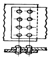
- 1줄 겹치기 리벳이음(평행형)
- 1줄 겹치기 리벳이음(지그재그형)
- 2줄 겹치기 리벳이음(평행형)
- 2줄 겹치기 리벳이음(지그재그형)
(정답률: 82%)
44. 플라스틱 재료의 공통된 성질로서 옳지 못한 것은?
- 가볍고 강하다.
- 내수성 및 내약품성이 있다.
- 표면경도가 강하다.
- 열에 약하다.
(정답률: 58%)
45. 표준고속도강의 조성으로 맞는것은?
- 18%W, 4%Cr, 1%V
- 18%W, 14%Cr, 1%V
- 18%Cr, 4%W, 1%V
- 18%V, 4%W, 1%Cr
(정답률: 78%)
46. 축의 원주에 많은 키를 깎은 것으로 큰 토크를 전달시킬 수 있고, 내구력이 크며, 보스와의 중심축을 정확하게 맞출 수 있는 키는?
- 세레이션
- 반달 키
- 접선 키
- 스플라인 키
(정답률: 72%)
47. 구름 베어링 기본 구성 요소 중 회전체 사이에 적절한 간격을 유지해 주는 구성 요소를 무엇이라 하는가?
- 리테이너
- 내륜
- 외륜
- 회전체
(정답률: 74%)
48. 금속의 종류에 따라 재결정 온도는 다르다. 다음 금속의 재결정 온도 중 틀린 것은?
- Fe : 750 ∼ 850℃
- Cu : 200 ∼ 300℃
- Al : 150 ∼ 240℃
- Ni : 530 ∼ 660℃
(정답률: 44%)
49. 하중에 의하여 물체 내부에 발생하는 저항력을 무엇이라하는가?
- 반력
- 응력
- 변형률
- 동하중
(정답률: 70%)
50. 압축코일 스프링에서 스프링의 직경 D, 소선의 직경 d, 스프링의 유효권수 n, 스프링 상수를 k라 할 때 스프링의 유효길이(l )는?
- l = π Dn
- l = π dnk
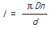
- l = π Dnk
(정답률: 33%)
51. 다음 그림에서 G 의 기호는 무엇을 표시하는가?
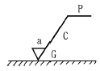
- 가공 방법의 약호
- 가공 기계의 약호
- 파상도 약호
- 가공 모양의 기호
(정답률: 62%)
52. 스퍼 기어제도에서 정면도의 이끝선과 측면도의 이끝원은 무슨 선인가?
- 굵은 실선
- 파선
- 일점 쇄선
- 이점 쇄선
(정답률: 54%)
53. 그림과 같이 테이퍼의 각도가 큰 공작물을 선반복식공구대를 회전시켜 가공하려면 공작물을 몇도 회전시켜 가공해야 하는가?
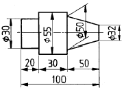
- tan-10.09
- tan-10.18
- tan-12.1
- tan-10.36
(정답률: 49%)
54. 보기의 입체도를 3각법으로 가장 적합하게 투상한 것은?
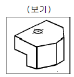
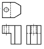
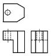
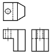
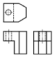
(정답률: 76%)
55. 보기 입체도를 제3각법으로 올바르게 투상한 투상도는?
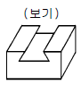
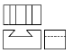
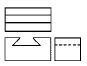
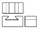
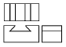
(정답률: 78%)
56. 보기 도면은 원통에서 사각 홈이 관통한 형상의 우측면도이다. 다음 중 정면 투상도로 가장 적합한 것은?
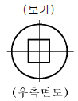
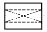
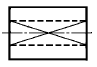
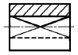
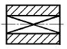
(정답률: 52%)
57. 다음 그림에서 A 부의 치수는 얼마인가?
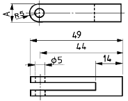
- 5
- 10
- 15
- 14
(정답률: 66%)
58. 보기와 같은 기하공차 기호에서 기호의 의미로 가장 적합한 것은?
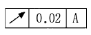
- 원주 흔들림 공차
- 진원도 공차
- 온 흔들림 공차
- 경사도 공차
(정답률: 68%)
59. 일반구조용 압연 강재 재료 기호 SS 330에서 330 이 나타내는 의미는?
- 재료의 최대 인장강도 330 kgf/mm2
- 재료의 최저 인장강도 330 N/mm2
- 재료의 최저 인장강도 330 kgf/cm2
- 재료의 최대 인장강도 330 N/cm2
(정답률: 46%)
60. 보기와 같은 암나사 관련부분의 도시 기호의 설명으로 틀린 것은?(오류 신고가 접수된 문제입니다. 반드시 정답과 해설을 확인하시기 바랍니다.)
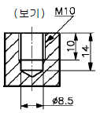
- 드릴의 지름은 8.5mm
- 암나사의 안지름은 10mm
- 드릴 구멍의 깊이는 14mm
- 유효 나사부의 길이는 10mm
(정답률: 40%)